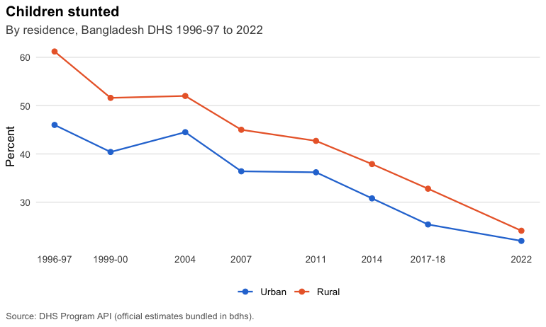
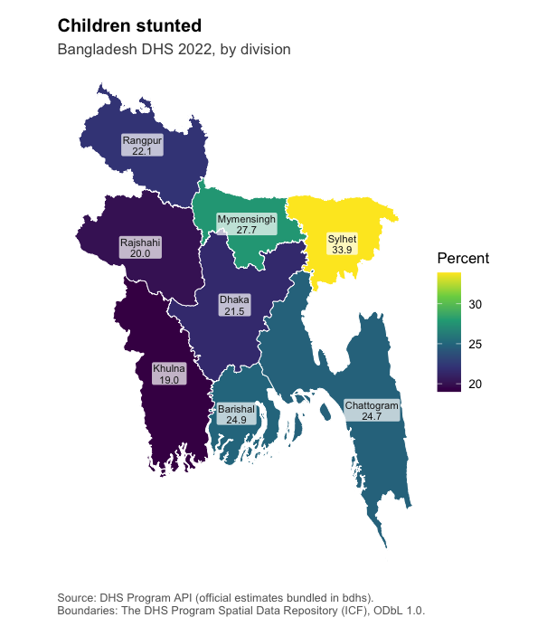

bdhs is an R toolkit for every round of the Bangladesh Demographic and Health Survey: 1993-94, 1996-97, 1999-2000, 2004, 2007, 2011, 2014, 2017-18 and 2022. It also covers the Bangladesh Service Provision Assessments and the 2001 maternal mortality survey.
It does two jobs:
- Ships the official numbers. Every estimate the DHS Program publishes for Bangladesh (about 310,000 values: national, by division, by residence, wealth, education and more), with definitions, survey and dataset catalogues, cross-round codebooks, division crosswalks and maps. These work straight after installation, with no DHS account.
- Makes your own microdata painless. Once you have downloaded BDHS files from the DHS Program, bdhs registers them, reads any round in one line, harmonizes variables across rounds, builds the correct complex survey design, pools rounds, and computes indicators that are validated against the official DHS estimates.
Why isn’t the microdata included, like in
brfss? BRFSS is US public domain data. DHS microdata are licensed to registered users, and the DHS terms of use say they “will not be re-distributed, either directly or within any tool”. bdhs respects that: it never bundles or uploads microdata. Registration is free and quick: https://dhsprogram.com/data/new-user-registration.cfm.
Installation
# install.packages("pak")
pak::pak("armanhossen-am/bdhs")Official estimates in one line
library(bdhs)
bdhs_official("FE_FRTR_W_TFR")[, c("year_label", "indicator", "value")]
#> # A tibble: 9 × 3
#> year_label indicator value
#> <chr> <chr> <dbl>
#> 1 1993-94 Total fertility rate 15-49 3.4
#> 2 1996-97 Total fertility rate 15-49 3.3
#> 3 1999-2000 Total fertility rate 15-49 3.3
#> 4 2004 Total fertility rate 15-49 3
#> 5 2007 Total fertility rate 15-49 2.7
#> 6 2011 Total fertility rate 15-49 2.3
#> 7 2014 Total fertility rate 15-49 2.3
#> 8 2017-18 Total fertility rate 15-49 2.3
#> 9 2022 Total fertility rate 15-49 2.3
bdhs_plot_trend("CN_NUTS_C_HA2", by = "Residence")
bdhs_map("CN_NUTS_C_HA2", survey = 2022)
Not sure what an indicator or variable is called? Search everything at once:
bdhs_search("caesarean|cesarean")
#> # bdhs search for "caesarean|cesarean": 151 matches
#>
#> ── Variables (145) ─────────────────────────────────────────────────────────────
#> m17_1-6 [IR] delivery by caesarean section 2017-18, 2022
#> m17a_1-6 [IR] na - timing on decision for caesarean section 2017-18, 2022
#> v401 [IR] last birth a caesarean section 2017-18, 2022
#> s433ka_1-6 [IR] who was called for caesarean: qualified doctor 2017-18
#> s433kb_1-6 [IR] who was called for caesarean: nurse/midwife/p... 2017-18
#> s433kc_1-6 [IR] who was called for caesarean: family welfare ... 2017-18
#> s433kd_1-6 [IR] who was called for caesarean: community skill... 2017-18
#> s433ke_1-6 [IR] who was called for caesarean: sub-assistant c... 2017-18
#> s433kf_1-6 [IR] who was called for caesarean: community healt... 2017-18
#> s433kg_1-6 [IR] who was called for caesarean: health assistant 2017-18
#> ... and 50 more
#>
#> ── Official DHS indicators (4) ─────────────────────────────────────────────────
#> RH_DELA_C_CSC Delivery by cesarean section 1999-00, 2004, 2007, 2011, 2014, 2017-18, 2022
#> RH_DELA_C_CSP Delivery by caesarean section pl... 2017-18
#> RH_DELA_C_CSA Delivery by caesarean section de... 2017-18
#> RH_DELA_C_CSM Delivery by caesarean section - ... 2017-18
#>
#> ── Computable with bdhs_estimate() (1) ─────────────────────────────────────────
#> rh_del_csection Delivery by caesarean section ... 1996-97, 1999-00, 2004, 2007, 2011, 2014, 2017-18, 2022
#>
#> ── Harmonized variables (1) ────────────────────────────────────────────────────
#> csection Delivery by caesarean section (m17) 1999-00, 2004, 2007, 2011, 2014, 2017-18, 2022
#>
#> # Use `print(x, n = Inf)` to see every match.Your microdata in one line
# Once: register the files you downloaded (folders, zips, renamed files are fine)
bdhs_import("~/Downloads/BDHS")
bdhs_inventory() # what you have vs. what exists
ir <- bdhs_read(2022, "IR") # women, 2022
kr <- bdhs_read("2017-18", "KR") # children, 2017-18
bdhs_estimate(kr, c("rh_anc_4plus", "rh_del_facility", "rh_del_csection"),
by = "v025") # correct design, SEs, CIs
bdhs_validate(kr) # compare with official DHS values
# Big files: read only what some indicators need
ir <- bdhs_read(2022, "IR", indicators = c("fp_cpr_modern", "fp_unmet_total"))
bdhs_mortality(bdhs_read(2022, "BR")) # NMR, IMR, U5MR with jackknife SEsThe same code runs on synthetic data from bdhs_simulate(), which has the structure of the real files with random values. That is how the examples, tests and vignettes run without real files:
kr <- bdhs_simulate(2022, "KR")
bdhs_estimate(kr, c("rh_anc_4plus", "rh_del_facility", "rh_del_csection"), by = "v025")
#> # BDHS estimates: 3 indicators | BD2022DHS | 95% CI
#> # A tibble: 6 × 11
#> survey_id indicator label v025 estimate se ci_low ci_high n_unweighted
#> <chr> <chr> <chr> <fct> <dbl> <dbl> <dbl> <dbl> <int>
#> 1 BD2022DHS rh_anc_4plus Four… urban 43.5 5.78 32.2 55.6 70
#> 2 BD2022DHS rh_anc_4plus Four… rural 23.8 3.10 18.0 30.8 75
#> 3 BD2022DHS rh_del_facil… Deli… urban 59.4 7.93 42.6 74.2 78
#> 4 BD2022DHS rh_del_facil… Deli… rural 49.7 2.96 43.7 55.8 84
#> 5 BD2022DHS rh_del_csect… Deli… urban 29.2 6.66 17.5 44.5 78
#> 6 BD2022DHS rh_del_csect… Deli… rural 31.4 4.08 23.6 40.4 84
#> # ℹ 2 more variables: n_weighted <dbl>, api_id <chr>What’s inside
| Bundled data | What it is |
|---|---|
bdhs_indicators |
Every official DHS estimate for Bangladesh, all rounds and breakdowns |
bdhs_indicator_catalog |
Definitions, denominators and coverage of each indicator |
bdhs_surveys, bdhs_datasets
|
Survey facts and the full list of 441 DHS data files |
bdhs_codebook, bdhs_value_labels
|
Variable names, labels and value labels across rounds (metadata only) |
bdhs_regions |
Division codes per round with a cross-round crosswalk |
bdhs_pool_population |
Female population 15-49 for pooled (de-normalized) weights |
bdhs_boundaries() |
Division boundaries for each survey (DHS Spatial Data Repository) |
| Task | Functions |
|---|---|
| Official estimates |
bdhs_official(), bdhs_plot_trend(), bdhs_map()
|
| Discover |
bdhs_search(), bdhs_variable(), bdhs_describe()
|
| Your files |
bdhs_import(), bdhs_read(), bdhs_inventory(), bdhs_download()
|
| Cross-round work |
bdhs_harmonize(), bdhs_pool(), bdhs_merge(), bdhs_na()
|
| Estimation |
bdhs_design(), bdhs_estimate(), bdhs_fertility(), bdhs_mortality(), bdhs_validate()
|
| Teaching and testing | bdhs_simulate() |
Things bdhs handles for you
-
Ever-married samples. Every BDHS women’s sample is ever-married women, so “all women” indicators need the DHS all-woman factors (
awfacttand friends). bdhs applies them where the DHS does. - Changing divisions. Bangladesh went from 5 divisions (1993-94) to 8 (2017-18 on), and the codes were renumbered when Mymensingh was created. bdhs maps every round onto consistent layouts.
- Correct designs. Clusters, sampling-error strata and weights per round, lonely PSUs, and pooled multi-round designs.
- DHS quirks. Special missing codes, flagged z-scores, 2-digit years in the early rounds, renamed and re-saved files, and recodes that only exist for some rounds.
Citation and conditions of use
Please cite bdhs and the data sources (citation("bdhs")). When you publish results from BDHS microdata, cite the survey’s final report. The DHS Program’s conditions for Bangladesh also ask you to send a copy of the publication to the NIPORT library.
bdhs is not affiliated with or endorsed by the DHS Program, ICF or NIPORT.